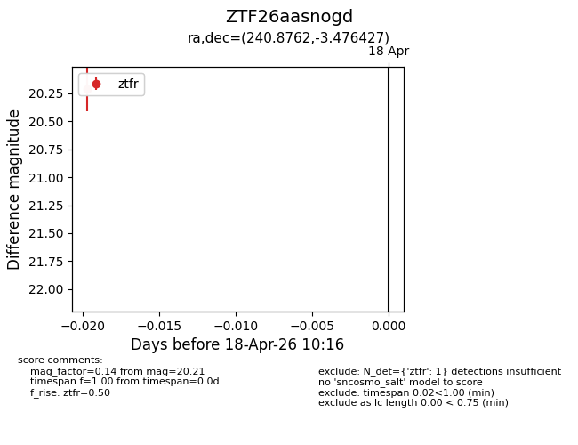
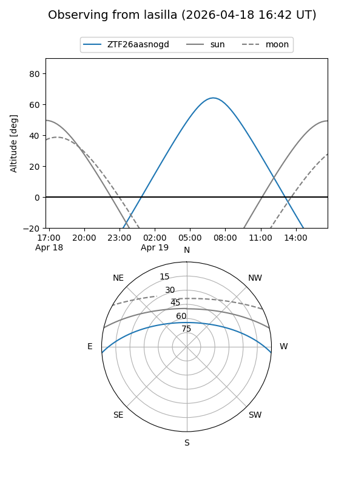
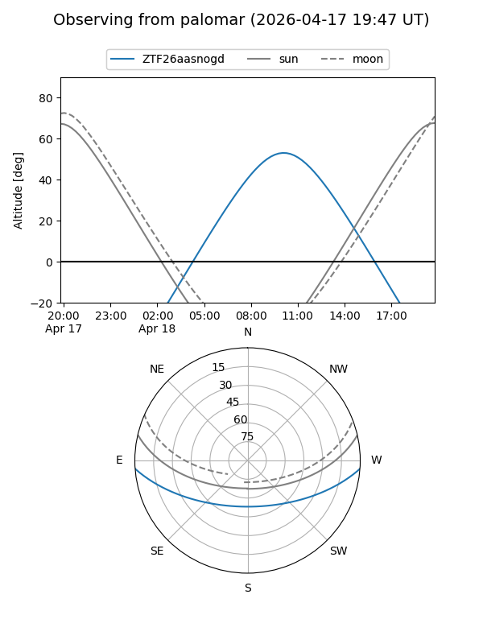
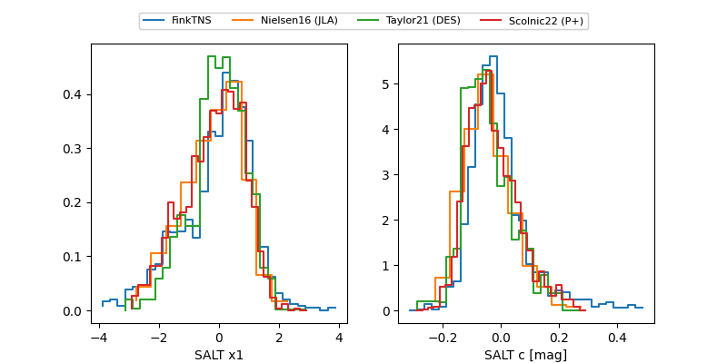

ZTF26aasnogd
Target ZTF26aasnogd at 2026-04-18 10:21
Aliases and brokers:
FINK: link
Lasair: link
ALeRCE: link
alt names
ZTF26aasnogd (ztf,fink_ztf)
Coordinates:
equatorial (ra, dec) = 240.8762,-3.47643
equatorial (HMS+DMS) = 16:03:30.28,-03:28:35.14
galactic (l, b) = (7.1484,+34.51209)
Flags:
Photometry:
last ztfr=20.21
1 ztfr detections
Lightcurve

Visibility


Additional plots
